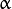
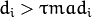

Cameras and similar devices with the capability of sensation of 3D structure are becoming more common. Thus, using depth and intensity information for matching 3D objects (or parts) are of crucial importance for computer vision. Applications range from industrial control to guiding everyday actions for visually impaired people. The task in recognition and pose estimation in range images aims to identify and localize a queried 3D free-form object by matching it to the acquired database.
From an industrial perspective, enabling robots to automatically locate and pick up randomly placed and oriented objects from a bin is an important challenge in factory automation, replacing tedious and heavy manual labor. A system should be able to recognize and locate objects with a predefined shape and estimate the position with the precision necessary for a gripping robot to pick it up. This is where vision guided robotics takes the stage. Similar tools are also capable of guiding robots (and even people) through unstructured environments, leading to automated navigation. These properties make 3D matching from point clouds a ubiquitous necessity. Within this context, I will now describe the OpenCV implementation of a 3D object recognition and pose estimation algorithm using 3D features.
The state of the algorithms in order to achieve the task 3D matching is heavily based on [drost2010], which is one of the first and main practical methods presented in this area. The approach is composed of extracting 3D feature points randomly from depth images or generic point clouds, indexing them and later in runtime querying them efficiently. Only the 3D structure is considered, and a trivial hash table is used for feature queries.
While being fully aware that utilization of the nice CAD model structure in order to achieve a smart point sampling, I will be leaving that aside now in order to respect the generalizability of the methods (Typically for such algorithms training on a CAD model is not needed, and a point cloud would be sufficient). Below is the outline of the entire algorithm:

As explained, the algorithm relies on the extraction and indexing of point pair features, which are defined as follows:
where and are feature two selected
points on the model (or scene), is the difference
vector, and are the normals at
and  . During the training stage, this
vector is quantized, indexed. In the test stage, same features are
extracted from the scene and compared to the database. With a few tricks
like separation of the rotational components, the pose estimation part
can also be made efficient (check the reference for more details). A
Hough-like voting and clustering is employed to estimate the object
pose. To cluster the poses, the raw pose hypotheses are sorted in decreasing order
of the number of votes. From the highest vote, a
new cluster is created. If the next pose hypothesis is close to one of
the existing clusters, the hypothesis is added to the cluster
and the cluster center is updated as the average of the pose
hypotheses within the cluster. If the next hypothesis is not
close to any of the clusters, it creates a new cluster. The
proximity testing is done with fixed thresholds in translation
and rotation. Distance computation and averaging for translation are performed in the 3D Euclidean space, while those
for rotation are performed using quaternion representation.
After clustering, the clusters are sorted in decreasing order
of the total number of votes which determines confidence of
the estimated poses.
. During the training stage, this
vector is quantized, indexed. In the test stage, same features are
extracted from the scene and compared to the database. With a few tricks
like separation of the rotational components, the pose estimation part
can also be made efficient (check the reference for more details). A
Hough-like voting and clustering is employed to estimate the object
pose. To cluster the poses, the raw pose hypotheses are sorted in decreasing order
of the number of votes. From the highest vote, a
new cluster is created. If the next pose hypothesis is close to one of
the existing clusters, the hypothesis is added to the cluster
and the cluster center is updated as the average of the pose
hypotheses within the cluster. If the next hypothesis is not
close to any of the clusters, it creates a new cluster. The
proximity testing is done with fixed thresholds in translation
and rotation. Distance computation and averaging for translation are performed in the 3D Euclidean space, while those
for rotation are performed using quaternion representation.
After clustering, the clusters are sorted in decreasing order
of the total number of votes which determines confidence of
the estimated poses.
This pose is further refined using in order to obtain the final pose.
PPF presented above depends largely on robust computation of angles between 3D vectors. Even though not reported in the paper, the naive way of doing this ( remains numerically unstable. A better way to do this is then use inverse tangents, like:
Let me summarize the following notation:
 point of the model (
accordingly) point of the model
( accordingly) point of the scene (
accordingly) point of the scene
( accordingly)
point of the model (
accordingly) point of the model
( accordingly) point of the scene (
accordingly) point of the scene
( accordingly) -axis. point of the model transformed by
. ( accordingly).
-axis. point of the model transformed by
. ( accordingly).The transformation in a point pair feature is computed by first finding the transformation from the first point, and applying the same transformation to the second one. Transforming each point, together with the normal, to the ground plane leaves us with an angle to find out, during a comparison with a new point pair.
We could now simply start writing
where
Note that this is nothing but a stacked transformation. The translational component reads
and the rotational being
in axis angle format. Note that bold refers to the vector form. After this transformation, the feature vectors of the model are registered onto the ground plane X and the angle with respect to is called . Similarly, for the scene, it is called .
As shown in the outline, PPF (point pair features) are extracted from the model, quantized, stored in the hashtable and indexed, during the training stage. During the runtime however, the similar operation is perfomed on the input scene with the exception that this time a similarity lookup over the hashtable is performed, instead of an insertion. This lookup also allows us to compute a transformation to the ground plane for the scene pairs. After this point, computing the rotational component of the pose reduces to computation of the difference . This component carries the cue about the object pose. A Hough-like voting scheme is performed over the local model coordinate vector and . The highest poses achieved for every scene point lets us recover the object pose.
// pc is the loaded point cloud of the model
// (Nx6) and pcTest is a loaded point cloud of
// the scene (Mx6)
ppf_match_3d::PPF3DDetector detector(0.03, 0.05);
detector.trainModel(pc);
vector<Pose3DPtr> results;
detector.match(pcTest, results, 1.0/10.0, 0.05);
cout << "Poses: " << endl;
// print the poses
for (size_t i=0; i<results.size(); i++)
{
Pose3DPtr pose = results[i];
cout << "Pose Result " << i << endl;
pose->printPose();
}
The matching process terminates with the attainment of the pose. However, due to the multiple matching points, erroneous hypothesis, pose averaging and etc. such pose is very open to noise and many times is far from being perfect. Although the visual results obtained in that stage are pleasing, the quantitative evaluation shows degrees variation (error), which is an acceptable level of matching. Many times, the requirement might be set well beyond this margin and it is desired to refine the computed pose.
Furthermore, in typical RGBD scenes and point clouds, 3D structure can capture only less than half of the model due to the visibility in the scene. Therefore, a robust pose refinement algorithm, which can register occluded and partially visible shapes quickly and correctly is not an unrealistic wish.
At this point, a trivial option would be to use the well known iterative closest point algorithm . However, utilization of the basic ICP leads to slow convergence, bad registration, outlier sensitivity and failure to register partial shapes. Thus, it is definitely not suited to the problem. For this reason, many variants have been proposed . Different variants contribute to different stages of the pose estimation process.
ICP is composed of stages and the improvements I propose for each stage is summarized below.
To improve convergence speed and computation time, it is common to use less points than the model actually has. However, sampling the correct points to register is an issue in itself. The naive way would be to sample uniformly and hope to get a reasonable subset. More smarter ways try to identify the critical points, which are found to highly contribute to the registration process. Gelfand et. al. exploit the covariance matrix in order to constrain the eigenspace, so that a set of points which affect both translation and rotation are used. This is a clever way of subsampling, which I will optionally be using in the implementation.
As the name implies, this step is actually the assignment of the points in the data and the model in a closest point fashion. Correct assignments will lead to a correct pose, where wrong assignments strongly degrade the result. In general, KD-trees are used in the search of nearest neighbors, to increase the speed. However this is not an optimality guarantee and many times causes wrong points to be matched. Luckily the assignments are corrected over iterations.
To overcome some of the limitations, Picky ICP [pickyicp] and BC-ICP (ICP using
bi-unique correspondences) are two well-known methods. Picky ICP first
finds the correspondences in the old-fashioned way and then among the
resulting corresponding pairs, if more than one scene point  is assigned to the same model point , it selects
that corresponds to the minimum distance. BC-ICP on the other hand,
allows multiple correspondences first and then resolves the assignments
by establishing bi-unique correspondences. It also defines a novel
no-correspondence outlier, which intrinsically eases the process of
identifying outliers.
is assigned to the same model point , it selects
that corresponds to the minimum distance. BC-ICP on the other hand,
allows multiple correspondences first and then resolves the assignments
by establishing bi-unique correspondences. It also defines a novel
no-correspondence outlier, which intrinsically eases the process of
identifying outliers.
For reference, both methods are used. Because P-ICP is a bit faster, with not-so-significant performance drawback, it will be the method of choice in refinment of correspondences.
In my implementation, I currently do not use a weighting scheme. But the
common approaches involve normal compatibility
() or assigning lower weights to point pairs
with greater distances
( ).
).
The rejections are done using a dynamic thresholding based on a robust estimate of the standard deviation. In other words, in each iteration, I find the MAD estimate of the Std. Dev. I denote this as . I reject the pairs with distances . Here is the threshold of rejection and by default set to . The weighting is applied prior to Picky refinement, explained in the previous stage.
As described in , a linearization of point to plane as in [koklimlow] error metric is used. This both speeds up the registration process and improves convergence.
Even though many non-linear optimizers (such as Levenberg Mardquardt) are proposed, due to the linearization in the previous step, pose estimation reduces to solving a linear system of equations. This is what I do exactly using cv::solve with DECOMP_SVD option.
Having described the steps above, here I summarize the layout of the ICP algorithm.
While the up-to-now-proposed variants deal well with some outliers and bad initializations, they require significant number of iterations. Yet, multi-resolution scheme can help reducing the number of iterations by allowing the registration to start from a coarse level and propagate to the lower and finer levels. Such approach both improves the performances and enhances the runtime.
The search is done through multiple levels, in a hierarchical fashion. The registration starts with a very coarse set of samples of the model. Iteratively, the points are densified and sought. After each iteration the previously estimated pose is used as an initial pose and refined with the ICP.
ICP icp(200, 0.001f, 2.5f, 8);
// Using the previously declared pc and pcTest
// This will perform registration for every pose
// contained in results
icp.registerModelToScene(pc, pcTest, results);
// results now contain the refined poses
This section is dedicated to the results of surface matching (point-pair-feature matching and a following ICP refinement):

Matches of different models for Mian dataset is presented below:
You might checkout the video on youTube here.
1 2 3 4 5 6 7 8 9 10 11 12 13 14 15 16 17 18 19 20 21 22 23 24 25 26 27 28 29 30 31 32 33 34 35 36 37 38 39 40 41 42 43 44 45 46 47 48 49 50 51 52 53 54 55 56 57 58 59 60 61 62 63 64 65 66 67 68 69 70 71 72 73 74 75 76 77 78 79 80 81 82 83 84 85 86 87 88 89 90 91 92 93 94 95 96 97 98 99 100 101 102 103 104 105 106 107 108 109 110 111 112 113 114 115 116 117 118 119 120 121 122 123 124 125 126 127 128 129 130 131 132 133 134 135 136 137 138 139 140 141 142 143 144 145 146 | //
// IMPORTANT: READ BEFORE DOWNLOADING, COPYING, INSTALLING OR USING.
//
// By downloading, copying, installing or using the software you agree to this license.
// If you do not agree to this license, do not download, install,
// copy or use the software.
//
//
// License Agreement
// For Open Source Computer Vision Library
//
// Copyright (C) 2014, OpenCV Foundation, all rights reserved.
// Third party copyrights are property of their respective owners.
//
// Redistribution and use in source and binary forms, with or without modification,
// are permitted provided that the following conditions are met:
//
// * Redistribution's of source code must retain the above copyright notice,
// this list of conditions and the following disclaimer.
//
// * Redistribution's in binary form must reproduce the above copyright notice,
// this list of conditions and the following disclaimer in the documentation
// and/or other materials provided with the distribution.
//
// * The name of the copyright holders may not be used to endorse or promote products
// derived from this software without specific prior written permission.
//
// This software is provided by the copyright holders and contributors "as is" and
// any express or implied warranties, including, but not limited to, the implied
// warranties of merchantability and fitness for a particular purpose are disclaimed.
// In no event shall the Intel Corporation or contributors be liable for any direct,
// indirect, incidental, special, exemplary, or consequential damages
// (including, but not limited to, procurement of substitute goods or services;
// loss of use, data, or profits; or business interruption) however caused
// and on any theory of liability, whether in contract, strict liability,
// or tort (including negligence or otherwise) arising in any way out of
// the use of this software, even if advised of the possibility of such damage.
//
// Author: Tolga Birdal <tbirdal AT gmail.com>
#include "opencv2/surface_matching.hpp"
#include <iostream>
#include "opencv2/surface_matching/ppf_helpers.hpp"
#include "opencv2/core/utility.hpp"
using namespace std;
using namespace cv;
using namespace ppf_match_3d;
static void help(const string& errorMessage)
{
cout << "Program init error : "<< errorMessage << endl;
cout << "\nUsage : ppf_matching [input model file] [input scene file]"<< endl;
cout << "\nPlease start again with new parameters"<< endl;
}
int main(int argc, char** argv)
{
// welcome message
cout << "****************************************************" << endl;
cout << "* Surface Matching demonstration : demonstrates the use of surface matching"
" using point pair features." << endl;
cout << "* The sample loads a model and a scene, where the model lies in a different"
" pose than the training.\n* It then trains the model and searches for it in the"
" input scene. The detected poses are further refined by ICP\n* and printed to the "
" standard output." << endl;
cout << "****************************************************" << endl;
if (argc < 3)
{
help("Not enough input arguments");
exit(1);
}
#if (defined __x86_64__ || defined _M_X64)
cout << "Running on 64 bits" << endl;
#else
cout << "Running on 32 bits" << endl;
#endif
#ifdef _OPENMP
cout << "Running with OpenMP" << endl;
#else
cout << "Running without OpenMP and without TBB" << endl;
#endif
string modelFileName = (string)argv[1];
string sceneFileName = (string)argv[2];
Mat pc = loadPLYSimple(modelFileName.c_str(), 1);
// Now train the model
cout << "Training..." << endl;
int64 tick1 = cv::getTickCount();
ppf_match_3d::PPF3DDetector detector(0.025, 0.05);
detector.trainModel(pc);
int64 tick2 = cv::getTickCount();
cout << endl << "Training complete in "
<< (double)(tick2-tick1)/ cv::getTickFrequency()
<< " sec" << endl << "Loading model..." << endl;
// Read the scene
Mat pcTest = loadPLYSimple(sceneFileName.c_str(), 1);
// Match the model to the scene and get the pose
cout << endl << "Starting matching..." << endl;
vector<Pose3DPtr> results;
tick1 = cv::getTickCount();
detector.match(pcTest, results, 1.0/40.0, 0.05);
tick2 = cv::getTickCount();
cout << endl << "PPF Elapsed Time " <<
(tick2-tick1)/cv::getTickFrequency() << " sec" << endl;
// Get only first N results
int N = 2;
vector<Pose3DPtr> resultsSub(results.begin(),results.begin()+N);
// Create an instance of ICP
ICP icp(100, 0.005f, 2.5f, 8);
int64 t1 = cv::getTickCount();
// Register for all selected poses
cout << endl << "Performing ICP on " << N << " poses..." << endl;
icp.registerModelToScene(pc, pcTest, resultsSub);
int64 t2 = cv::getTickCount();
cout << endl << "ICP Elapsed Time " <<
(t2-t1)/cv::getTickFrequency() << " sec" << endl;
cout << "Poses: " << endl;
// debug first five poses
for (size_t i=0; i<resultsSub.size(); i++)
{
Pose3DPtr result = resultsSub[i];
cout << "Pose Result " << i << endl;
result->printPose();
if (i==0)
{
Mat pct = transformPCPose(pc, result->pose);
writePLY(pct, "para6700PCTrans.ply");
}
}
return 0;
}
|
Surface matching module treats its parameters relative to the model diameter (diameter of the axis parallel bounding box), whenever it can. This makes the parameters independent from the model size. This is why, both model and scene cloud were subsampled such that all points have a minimum distance of , where is the distance along a given dimension. All three dimensions are sampled in similar manner. For example, if is set to 0.05 and the diameter of model is 1m (1000mm), the points sampled from the object’s surface will be approximately 50 mm apart. From another point of view, if the sampling RelativeSamplingStep is set to 0.05, at most model points are generated (depending on how the model fills in the volume). Consequently this results in at most 8000x8000 pairs. In practice, because the models are not uniformly distributed over a rectangular prism, much less points are to be expected. Decreasing this value, results in more model points and thus a more accurate representation. However, note that number of point pair features to be computed is now quadratically increased as the complexity is O(N^2). This is especially a concern for 32 bit systems, where large models can easily overshoot the available memory. Typically, values in the range of 0.025 - 0.05 seem adequate for most of the applications, where the default value is 0.03. (Note that there is a difference in this paremeter with the one presented in [drost2010]. In [drost2010] a uniform cuboid is used for quantization and model diameter is used for reference of sampling. In my implementation, the cuboid is a rectangular prism, and each dimension is quantized independently. I do not take reference from the diameter but along the individual dimensions.
It would very wise to remove the outliers from the model and prepare an ideal model initially. This is because, the outliers directly affect the relative computations and degrade the matching accuracy.
During runtime stage, the scene is again sampled by , as described above. However this time, only a portion of the scene points are used as reference. This portion is controlled by the parameter , where . In other words, if the , the subsampled scene will once again be uniformly sampled to 1/5 of the number of points. Maximum value of this parameter is 1 and increasing this parameter also increases the stability, but decreases the speed. Again, because of the initial scene-independent relative sampling, fine tuning this parameter is not a big concern. This would only be an issue when the model shape occupies a volume uniformly, or when the model shape is condensed in a tiny place within the quantization volume (e.g. The octree representation would have too much empty cells).
acts as a step of discretization over the hash table. The point pair features are quantized to be mapped to the buckets of the hashtable. This discretization involves a multiplication and a casting to the integer. Adjusting RelativeDistanceStep in theory controls the collision rate. Note that, more collisions on the hashtable results in less accurate estimations. Reducing this parameter increases the affect of quantization but starts to assign non-similar point pairs to the same bins. Increasing it however, wanes the ability to group the similar pairs. Generally, because during the sampling stage, the training model points are selected uniformly with a distance controlled by RelativeSamplingStep, RelativeDistanceStep is expected to equate to this value. Yet again, values in the range of 0.025-0.05 are sensible. This time however, when the model is dense, it is not advised to decrease this value. For noisy scenes, the value can be increased to improve the robustness of the matching against noisy points.
| [drost2010] | (1, 2, 3)
|
| [pickyicp] | Zinsser, Timo and Schmidt, Jochen and Niemann, Heinrich A refined ICP algorithm for robust 3-D correspondence estimation Image Processing, 2003. ICIP 2003. Proceedings. 2003 International Conference on Image Processing, IEEE. |
| [koklimlow] | Kok Lim Low, Linear Least-Squares Optimization for Point-to-Plane ICP Surface Registration Technical Report TR04-004, Department of Computer Science, University of North Carolina at Chapel Hill, February 2004 |
{kind=link}